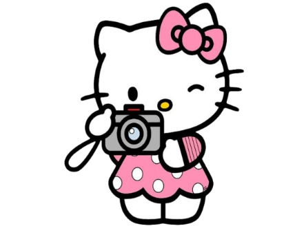

Hello Kitty
A Hello Kitty é uma personagem icônica criada pela empresa japonesa Sanrio em 1974. Com seu visual simples — um rostinho branco, laço vermelho e sem boca — ela conquistou fãs no mundo todo. Apesar de muita gente pensar que ela é uma gatinha comum, a Hello Kitty é, na verdade, uma personagem com personalidade própria: gentil, alegre e muito amiga. Ela vive em Londres, adora fazer novos amigos e gosta de coisas fofas, como cupcakes e aventuras com sua irmã gêmea, Mimmy. Ao longo dos anos, a Hello Kitty virou um símbolo da cultura “kawaii” (fofa) japonesa e aparece em produtos, desenhos e colaborações com diversas marcas. Mais do que uma personagem, a Hello Kitty representa amizade, carinho e simplicidade — valores que continuam encantando pessoas de todas as idades.